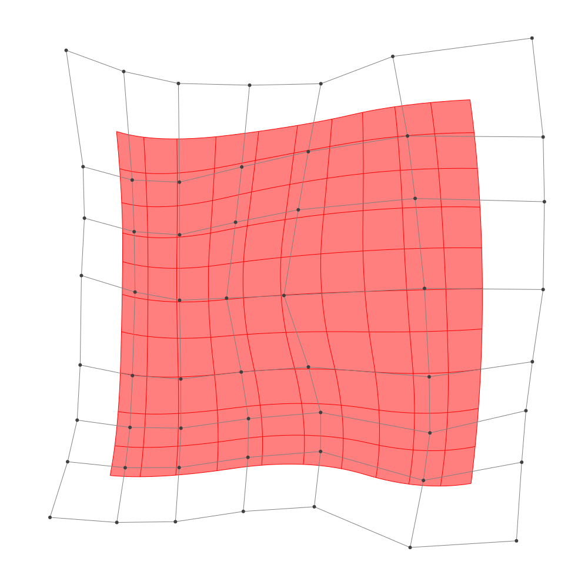
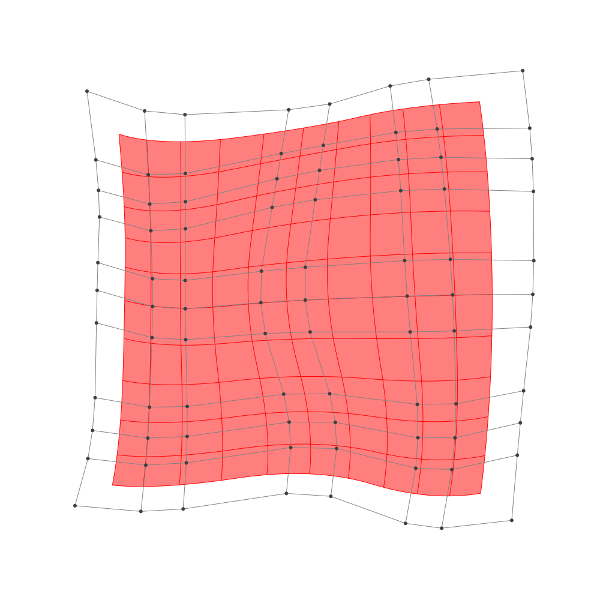

Refinement
BasicBSpline.refinement — FunctionRefinement of B-spline manifold with given B-spline spaces.
julia> p = 2 # degree of polynomial2julia> k = KnotVector(1:8) # knot vectorKnotVector([1.0, 2.0, 3.0, 4.0, 5.0, 6.0, 7.0, 8.0])julia> P = BSplineSpace{p}(k) # B-spline spaceBSplineSpace{2, Float64}(KnotVector([1.0, 2.0, 3.0, 4.0, 5.0, 6.0, 7.0, 8.0]))julia> rand_a = [SVector(rand(), rand()) for i in 1:dim(P), j in 1:dim(P)]5×5 Matrix{StaticArrays.SVector{2, Float64}}: [0.350057, 0.700769] [0.849618, 0.278658] … [0.625446, 0.644048] [0.0983041, 0.569084] [0.194575, 0.104956] [0.130828, 0.0905237] [0.664082, 0.958374] [0.819609, 0.488799] [0.821226, 0.0246266] [0.474604, 0.189311] [0.852275, 0.0893926] [0.179883, 0.540454] [0.283577, 0.302267] [0.431862, 0.530125] [0.54816, 0.852114]julia> a = [SVector(2*i-6.5, 2*j-6.5) for i in 1:dim(P), j in 1:dim(P)] + rand_a # random5×5 Matrix{StaticArrays.SVector{2, Float64}}: [-4.14994, -3.79923] [-3.65038, -2.22134] … [-3.87455, 4.14405] [-2.4017, -3.93092] [-2.30542, -2.39504] [-2.36917, 3.59052] [0.164082, -3.54163] [0.319609, -2.0112] [0.321226, 3.52463] [1.9746, -4.31069] [2.35227, -2.41061] [1.67988, 4.04045] [3.78358, -4.19773] [3.93186, -1.96988] [4.04816, 4.35211]julia> M = BSplineManifold(a,(P,P)) # Define B-spline manifoldBSplineManifold{2, (2, 2), StaticArrays.SVector{2, Float64}, Tuple{BSplineSpace{2, Float64}, BSplineSpace{2, Float64}}}((BSplineSpace{2, Float64}(KnotVector([1.0, 2.0, 3.0, 4.0, 5.0, 6.0, 7.0, 8.0])), BSplineSpace{2, Float64}(KnotVector([1.0, 2.0, 3.0, 4.0, 5.0, 6.0, 7.0, 8.0]))), StaticArrays.SVector{2, Float64}[[-4.149942700612439, -3.799230837780126] [-3.6503821839599553, -2.2213424844920757] … [-3.536549516613202, 1.8159692358678363] [-3.8745539517692227, 4.144048204318861]; [-2.4016958564067874, -3.930915502602827] [-2.3054246883010276, -2.3950442243055825] … [-2.290770884436196, 1.5028188240386489] [-2.3691718042432086, 3.5905236625806634]; … ; [1.974604081534372, -4.310689270734119] [2.35227477276734, -2.4106074184610393] … [1.974228750558682, 2.4492890026309535] [1.6798826786309293, 4.040453721227632]; [3.7835774107989177, -4.1977331367310775] [3.9318616096574432, -1.969875323477695] … [4.270366282808973, 2.3733275069217936] [4.048160459792833, 4.3521142731113285]])
h-refinemnet
Insert additional knots to knot vector.
julia> k₊=(KnotVector(3.3,4.2),KnotVector(3.8,3.2,5.3)) # additional knotvectors(KnotVector([3.3, 4.2]), KnotVector([3.2, 3.8, 5.3]))julia> M_h = refinement(M,k₊=k₊) # refinement of B-spline manifoldBSplineManifold{2, (2, 2), StaticArrays.SVector{2, Float64}, Tuple{BSplineSpace{2, Float64}, BSplineSpace{2, Float64}}}((BSplineSpace{2, Float64}(KnotVector([1.0, 2.0, 3.0, 3.3, 4.0, 4.2, 5.0, 6.0, 7.0, 8.0])), BSplineSpace{2, Float64}(KnotVector([1.0, 2.0, 3.0, 3.2, 3.8, 4.0, 5.0, 5.3, 6.0, 7.0, 8.0]))), StaticArrays.SVector{2, Float64}[[-4.149942700612439, -3.799230837780126] [-3.850206390620949, -2.8524978258072955] … [-3.587250181886605, 2.16518108113549] [-3.8745539517692227, 4.144048204318861]; [-3.013582251878766, -3.8848258699148817] [-2.8711287878204974, -2.954479517188466] … [-2.7521827282250233, 1.9381968357803894] [-2.8960555558773136, 3.7842572521890325]; … ; [1.974604081534372, -4.310689270734119] [2.201206496274153, -3.170640159370271] … [1.9300768397695192, 2.687963710420455] [1.6798826786309293, 4.040453721227632]; [3.7835774107989177, -4.1977331367310775] [3.872547930114033, -2.8610184487790478] … [4.237035409356552, 2.6701455218502237] [4.048160459792833, 4.3521142731113285]])julia> save_png("2dim_h-refinement.png", M_h) # save image

Note that this shape and the last shape are identical.
p-refinemnet
Increase the polynomial degree of B-spline manifold.
julia> p₊=(1,2) # additional degrees(1, 2)julia> M_p = refinement(M,p₊=p₊) # refinement of B-spline manifoldBSplineManifold{2, (3, 4), StaticArrays.SVector{2, Float64}, Tuple{BSplineSpace{3, Float64}, BSplineSpace{4, Float64}}}((BSplineSpace{3, Float64}(KnotVector([1.0, 2.0, 3.0, 3.0, 4.0, 4.0, 5.0, 5.0, 6.0, 6.0, 7.0, 8.0])), BSplineSpace{4, Float64}(KnotVector([1.0, 2.0, 3.0, 3.0, 3.0, 4.0, 4.0, 4.0, 5.0, 5.0, 5.0, 6.0, 6.0, 6.0, 7.0, 8.0]))), StaticArrays.SVector{2, Float64}[[-3.7504818202711583, -3.428456905053182] [-3.534309007657141, -2.6430141513250556] … [-3.402604040233164, 2.3357816539295193] [-3.5499726315320905, 3.479789960662614]; [-2.652198815558511, -3.52324952743345] [-2.570455785793402, -2.7518124653689258] … [-2.528817699556992, 2.0869523577252256] [-2.5896517857395827, 3.1508359544886506]; … ; [2.3609595387044378, -3.803185453624497] [2.5306793432897163, -2.8258298640729307] … [2.286337664989776, 2.850570851644965] [2.145176316435201, 3.6784550482427094]; [3.528710676151729, -3.673252037459086] [3.6219683166121923, -2.5866377942474186] … [3.8291193946419053, 2.864533529104335] [3.7120047957245346, 3.821625074899698]])julia> save_png("2dim_p-refinement.png", M_p) # save image

Note that this shape and the last shape are identical.